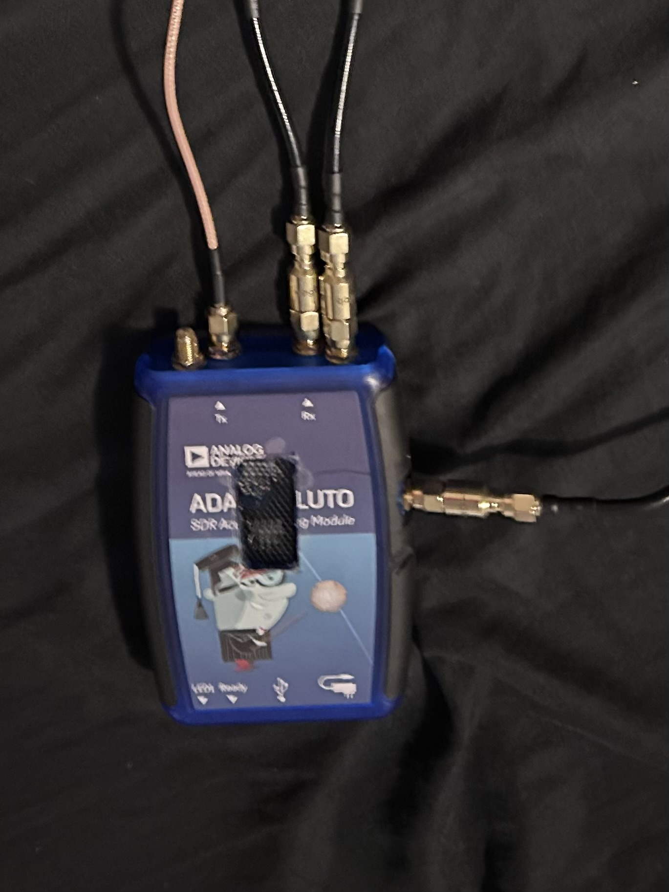
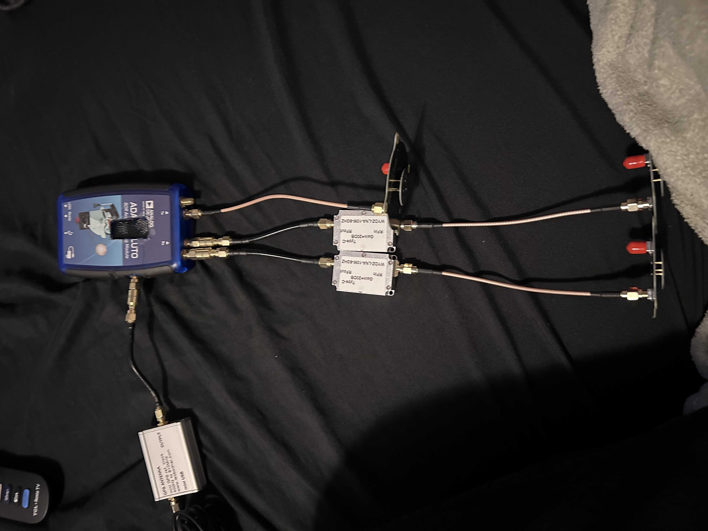
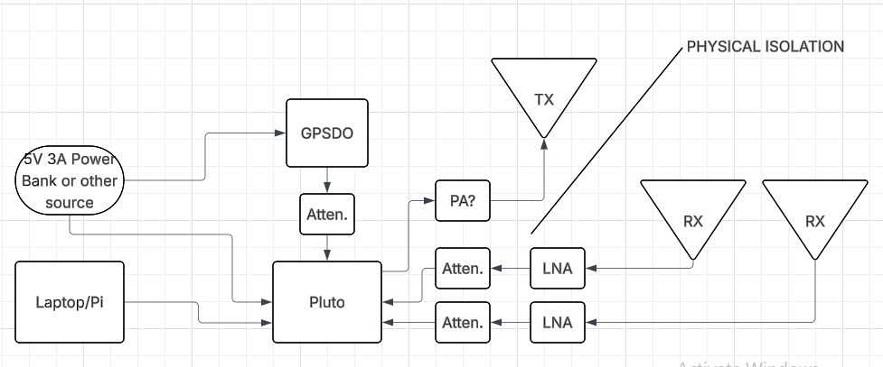

CM-R1
The most complicated project I have done so far, I aim to create a compact, accurate, and directional FMCW (frequency modulated continuous wave) radar system.
Overview
My most ambitious project yet, the CM-R1 is my idea for a compact, portable, and accurate directional FMCW radar. Many details are still muddy, because as I have learned, a lot goes into making a radar system, especially FMCW instead of CW or pulsed.
I have spent months researching and learning about radar systems, signal processing, antennas, and RF electronics. Recently, I was able to get a simple Doppler system working with the Pluto SDR, as demonstrated in this video.
The current plan as of 3/25/26:
Hardware Components
- SDR: ADALM-PLUTO Rev. D SDR operating on the 5.8GHz ISM band.
Both Rev. C and D actually have 2 RX and TX, only accessible via a U.Fl connector on the PCB.
They also have both a Clock In and Clock Out, once again via U.Fl connectors.
One of my Plutos is modified, and has U.Fl to SMA pigtails connected to the TX2, RX2, and Clock In ports.
I will need to account for the phase shift implicit in having different lengths between the actual input and SMA on RX1 and RX2
To do that, I will have to write some sort of script to test and determine the offset that needs to be hard-coded into the final program.
Should be able to set up a strong reflector in the center of the radar's FOV, and use the phase difference between signals captured from RX1 and RX2 to
calculate delta Phi, the phase difference. Then just multiply every sample from RX2 by e^-j(deltaPhi). Apparently j is the electrical engineers version of i, sqrt(-1).
(IMPORTANT) - I need to look more into IQ sampling and how phase works with that.
- Antennas: 2 RX antennas, 1 TX. RX antennas spaced 1/2 wavelength apart, TX at least 15 cm away from the pair. I have not yet determined whether or not it should be in plane or offset from the RX antennas.
- RF Filtering and Amplification: Any other RF filtering and amplification that may be required. As of now, I know that I need:
- Attenuator and DC blocker between GPSDO and Pluto, as the Pluto Clock In prefers 1.8v and the Leo Bodnar Mini outputs 3.3v. I don't yet know how big of a deal that 1.5 volt difference is, but to be safe I will ensure I get at least an attenuator.
- Housing: Likely an aluminum housing to shield parts, I'll need to find the right size to avoid trapping "standing" waves.
- Computer: Possibly a Raspberry Pi for most of the calculations and processing. I will just use my laptop during testing.
Software and Signal Processing
Much of the signal processing will be handled on the Pluto to avoid the USB 2.0 bottleneck.
- Cyclic buffers to store chirp and free usb bandwidth.
- Fast lock profiles on the pluto for perfect chirps
- A significant problem is the low bandwidth of the pluto. For decent range resolution, I need a wider bandwidth chirp, eg. 150MHz for around a meter of resolution. My plan was to just do multiple chirps and "stitch" them together into one to account for this, but this raises a significant issue with phase coherency. Every time the pluto recalibrates to a different chirp starting point, it resets to a different phase. I need to find a way to overlap the chirps and mathematically shift the phase of each subsequent one to match the previous.
- Maximum cooling, implement a fan as well as the heatsinks already in place
- Internal calibration if possible to maintain phase alignment over a long period of time
- Possibly (emphasis on POSSIBLY) offload the fft from the pluto's processor to the FPGA
- Should be able to perform an FFT on the raw data, then just send the FFT bins to my computer over the USB. I'll probably just use a Python library like Electron for visualization.
- Cross compiling C or C++ to the Pluto, preferably C++ if it will work. I've already messed with sending C binaries to the Pluto and that worked well enough, I'd just rather use C++.
- When I did that before, I sent over .so files (shared libraries) for me to be able to use the libraries. Having asked an LLM about any ways to get around that (it was a pretty big issue, made quick changes difficult), it suggested "static linking" which apparently can link the libraries straight into the executable.
- Also, I will have to store and run the executable from the Pluto's RAM, as it has almost half a gig of memory as opposed to only 32 mb of storage. It's obviously also just fast. I'll just use the /tmp directory.
Logs:
-
4/14/2026 - All the parts arrived, bringing the total cost of this project to just over $800. Of course, because the Plutos and GPSDO were graciously sent to me by their respective companies, that brings the actual amount of money I've spent to only around $270.
Last night, I went ahead and connected everything. I also grabbed a DHT22 temp & humidity sensor out of my parts drawer. I plan to stick it in the pluto's case so that I can monitor it's temperature. I am expecting the pluto to get very hot, so I modified it to include heatsinks on the CPU and the FPGA, and cut a window in the top of the case with some mesh in it. I will likely add a fan as well; I'll probably just grab one from a raspberry pi case. After I connected all the parts, I noticed the physical size of my antennas. They all have a radius of about 29.2 mm, meaning it is literally physically impossible to space them exacly 25.8mm apart center to center. Having gone to an LLM to ask about this problem, it said that I can vertically offset one of them in order to make the horizontal spacing the right distance. I have yet to fact-check this, but that remains the plan for now. Of course, to nail that perfect 25.8 mm 1/2 wavelength spacing, I'll need to 3d print a jig to mount the antennas. Another worry is the differing lengths of all my SMA cables. I have 5 of the same length, but that isn't enough for the project. This difference in length will manifest as a phase difference in signals. I will need to calculate and adjust for this phase difference in software.
Images
No pictures yet :(


